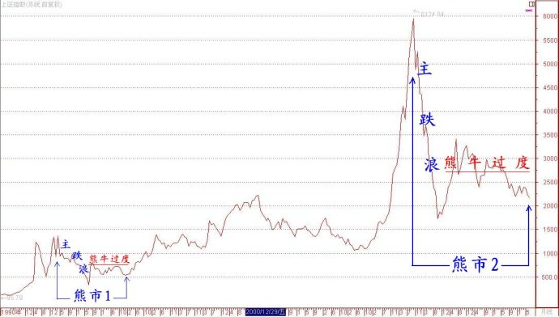

第210篇•现在的股市其实并不弱
谷为陵
如果光从指数上看，现在的A股是处于熊市。但若从个股与板块的表现来看，现在的市场其实并不弱。凡是经历过1993年2月至1994年7月底、2001年6月至2005年6月以及2007年10月至2008年11月底这三轮大熊市的投资者，应该不会忘记那种水银泻地般的全盘暴跌的景象，那才是真正的大熊市，现在不算。
大熊市，尤其是大熊市的主跌阶段（也可称为主跌浪），属于极度的弱势，它的典型表现有五点：一是股指持续下跌，二是没有整体性的板块上涨行情；三是个股行情很弱，股价能够翻倍的股票不多，股价能够上涨2～3倍的黑马和牛股就更少见到了；四是能够创出历史新高的股票几乎没有；五是对于利空敏感，对于利好麻木，往往会将利好当做利空对待。
若对照这五点，现在的股市是什么情况呢？其一，在股指持续下跌方面倒是吻合，现在股市像是熊市；其二，在无整体性的板块上涨行情方面，现在股市有时候还会出现某些板块联动现象，这说明现在股市要比熊市主跌浪时稍强一些；其三，在个股行情方面，现在股市的个股行情还算是活跃的，那些绩优成长股、题材股的股价可以轻易翻倍，某些大黑马、大牛股股价能够上涨2～3倍以上，这说明现在股市不是典型的熊市特征；其四，在创历史新高的股票方面，现在股市创出历史新高的股票很多，若仅从创新高的股票数量来看，现在的股市哪里像是熊市，简直就像是是处于牛市。其五，在对于利空与利好方面，现在股市还是对利空敏感，有利空的股票会大跌，但对于利好却不麻木，往往会有非常正面的反应，关于这一点，我在下面还要谈及。
综上所述，通过比对大熊市主跌浪的五个弱势特征，我认为现在的股市处于弱势不假，但并非处于熊市主跌浪。也许有网友会问，那这轮熊市的主跌浪在哪里？其实，大家看看上证指数的K线图就很清楚了，这轮大熊市是自2007年10月开始的，其主跌浪是自2007年10月至2008年11月，已经结束了。自2008年12月至今，上证指数一直在走“熊牛过度”阶段。非常巧合的是，自2007年10月至今的大熊市，从形态上看，极像了1993年2月至1995年底的那一轮大熊市。
大家请看下面的上证指数月收盘线图，其中，“熊市1”为1993年2月至1995年底的大熊市，“熊市2”为2007年10月至今的大熊市：

从形态上看，这两轮大熊市有三个相似之处：一是主跌浪相似——跌幅相似，“熊市1”跌幅为79%，而“熊市2”跌幅为73%；下跌所用时间相似，“熊市1”下跌时间为17个月，而“熊市2”为13个月；主跌浪结束原因相似，“熊市1”结束是因“三大救市”政策，“熊市2”结束是因“四万亿”的救经济政策。二是反弹浪相似，“熊市1”在主跌浪结束后，立即展开了一轮大反弹；而“熊市2”在主跌浪结束后，也立即展开了一轮大反弹。三是熊牛过度阶段相似，“熊市1”在大反弹后，指数继续调整，重心缓慢下沉，但却始终无法再跌破主跌浪创下的325点的最低点；“熊市2”也是如此，在经过2008年11月底至2009年8月的大反弹后，指数继续调整，重心缓慢下沉，但至今还无法跌破本轮熊市主跌浪创下的1664点的最低点。
当然，由于经济环境、股市环境、投资者构成等因素已经很不相同，我们对于股市的预测不能够这样简单机械地照搬历史，但通过对比“熊市1”和“熊市2”的形态特征，我们还是应该能够受到某些启发的，毕竟影响股市走势的一个非常重要的因素——人性，还是没有什么大的变化的。
好了，接着回到现在的股市。我说现在的股市不弱，其中谈到了市场对于利好信息反应极强，不管是业绩增长，还是重大利好题材，股价往往会因此而大涨，这似乎属于强势市场甚至是牛市才有的现象。比如，近期传出草甘膦价格有所上涨，结果江山股份（600389）股价就应声大涨，几乎翻倍。再如，昨天上午，海南省第四届人民代表大会常务委员会第三十二次会议通过了《海南省人大常委会关于成立三沙市人民代表大会筹备组的决定》，标志着三沙市的政权组建正式启动，结果呢，上午股价还跌了5%的海南瑞泽（002596），在下午一开盘就遭到疯抢，仅仅10分钟就封上了涨停板，今天又是一个涨停板。
所以，在熊牛过度阶段，行情就是剧烈分化的，这是现在股市的一个基本特征。在分化的市场里，齐涨共跌是不可能见到的。对于高手来说，这样的市场还是可做的，但要在这样的市场获得良好的收益，操作者的选股能力和操作能力必须超强。